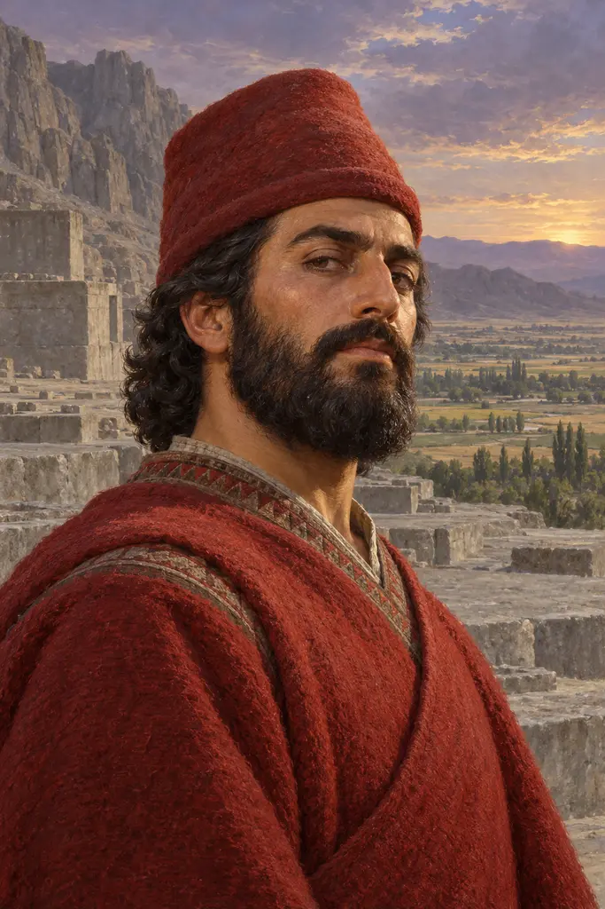
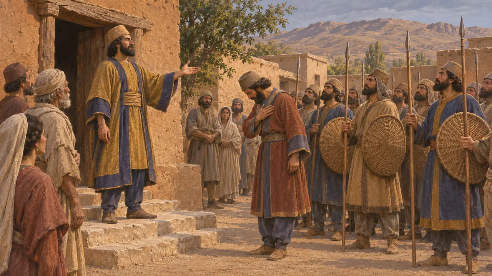
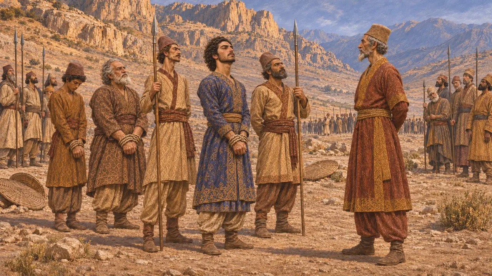
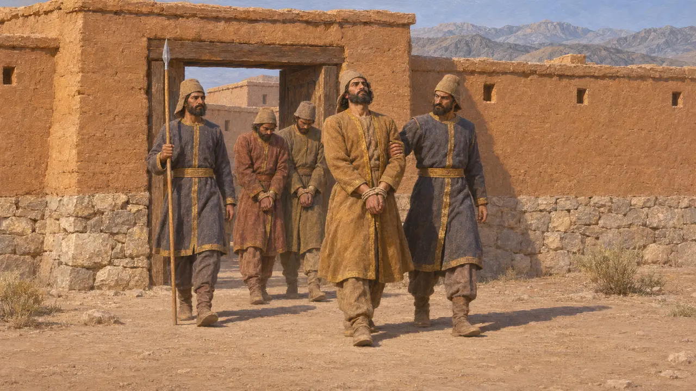
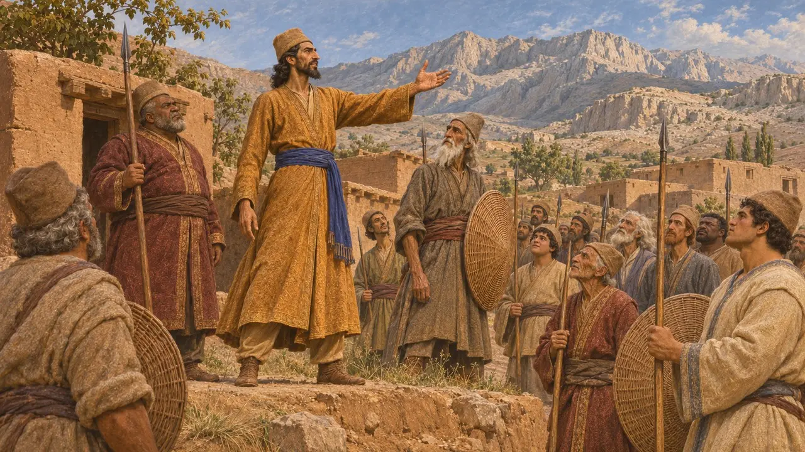
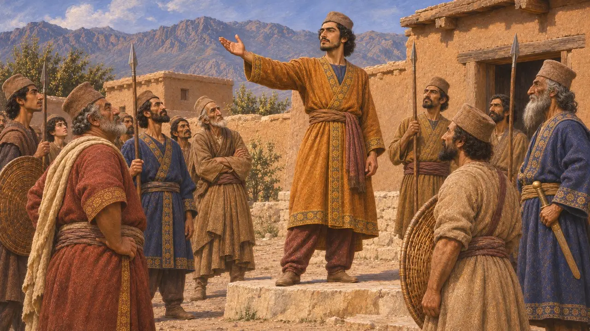

Vahyazdata
Kyros'un oğlu Bardiya olduğunu ileri süren Pers taht iddiacısı, Persis, MÖ 522-521
Oyunda: Bölüm 4: Teras
Vahyazdata, Dareios'un tahtı ele geçirmesinden kısa süre sonra Kyros'un oğlu Bardiya olduğunu iddia eden bir Pers'ti. Bu iddiada bulunan ikinci kişiydi ve Perslerin kendi yurdu olan Persis'te askerleri yanına çekti. Dareios'un komutanları onu ezdi; ayaklanması, Dareios'un kendi halkı arasında bile direnişle karşılaştığını gösterir.
Oyunda: Oyunun kronik notu Behistun yazıtıyla örtüşür: ikinci sahte Bardiya, Persis'te bir ayaklanma, Raha'da ve Parga Dağı'nda alınan yenilgiler ve kazığa oturtulma. Taraftarları oyunda Vahyazdata'nın asileri olarak yer alır.

Persis'te ikinci bir Bardiya
BelgelerdeDareios'un Behistun yazıtına göre Vahyazdata, Persis'in Yautiya bölgesindeki Tarava adlı bir kasabada yaşıyordu. Halka kendisinin Kyros oğlu Bardiya olduğunu söyledi. Saraya bağlı Pers birlikleri onun tarafına geçti ve Persis'te kral oldu. Dareios bunu, magos Gaumata'nınkinden sonra Persis'teki ikinci isyan olarak saydı.
DB §40

Raha'da ve Parga Dağı'nda yenilgi
BelgelerdeDareios, Pers Artavardiya komutasında Pers ve Med birlikleri gönderdi, kendisi ise Medya'ya doğru yoluna devam etti. Artavardiya, Vahyazdata'yı Persis'teki Raha'da yendi. Vahyazdata Paişiyauvada'ya kaçtı, yeni bir ordu topladı ve 521 yazında Parga Dağı'nda yeniden yenildi. Başlıca adamlarıyla birlikte yakalandı; Dareios onları Persis'teki Uvadaiçaya'da kazığa geçirttiğini söyler.
DB §41-43

Arakhosia'daki savaş
BelgelerdeVahyazdata, Dareios'un Arakhosia satrapı Vivana'ya karşı doğuya da bir ordu gönderdi. Vivana bu orduyu Kapişakaniş kalesinde, ardından Gandutava bölgesinde bir kez daha yendi. Asi komutan Arşada kalesine kaçtı; orada kendisi ve önde gelen adamları yakalanıp öldürüldü. Behistun kabartmasında Vahyazdata, zincirli asilerin arasında, Bardiya olduğunu iddia eden yalancı diye tanıtılarak durur.
DB §45-48; DBh

Yunan anlatısında eksik olanlar
Antik anlatıHerodotos, bir magosun Smerdis'in (Bardiya için kullandığı ad) kılığına girdiğini ve yedi Pers soylusu tarafından öldürüldüğünü uzun uzun anlatır. O yalnızca bu tek sahte hükümdarı bilir; Vahyazdata'dan ya da Persis'teki çarpışmalardan hiç söz etmez. Bu ayaklanma için gerçek anlamda tek kaynak Pers kayıtlarıdır.
Herodotus 3.61-79

Ayaklanmanın ortaya koydukları
TartışmalıDareios, gerçek Bardiya'nın Kambyses tarafından gizlice öldürüldüğünü söyler; ancak bazı tarihçiler, Dareios'un devirdiği adamın gerçek Bardiya olduğundan şüphelenir. Her iki durumda da Persis'te asker toplayan ikinci bir Bardiya'nın varlığı, pek çok Persin Dareios'un anlattıklarından kuşku duyduğunu ya da onun hükümdarlık iddiasını reddettiğini düşündürür. Tarihçiler bu muhalefetin ne kadar derin olduğu konusunda görüş ayrılığı içindedir.
P. Briant, From Cyrus to Alexander, 2002
Kaynaklar
- Behistun inscription, DB §40-48 and DBh
- R. Schmitt, The Bisitun Inscriptions of Darius the Great: Old Persian Text, 1991
- A. Kuhrt, The Persian Empire: A Corpus of Sources from the Achaemenid Period, 2007
- P. Briant, From Cyrus to Alexander, 2002
- Herodotus 3.61-79